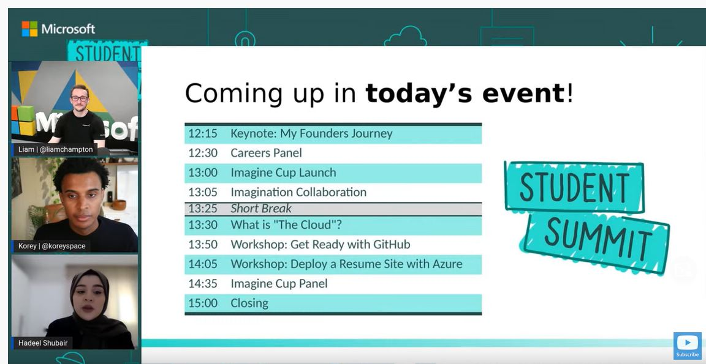
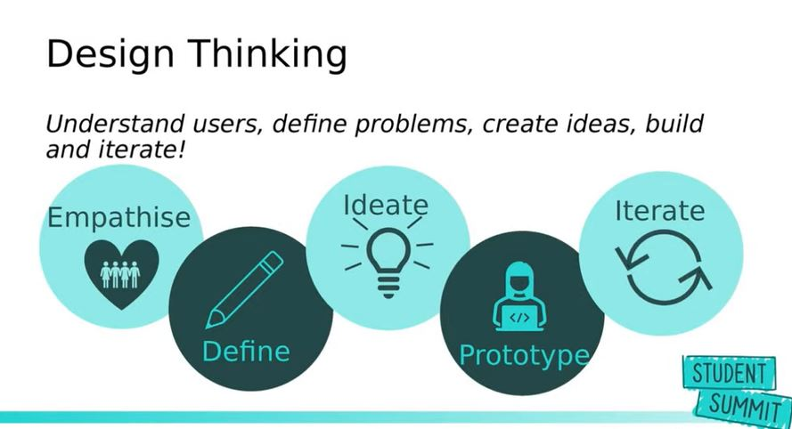
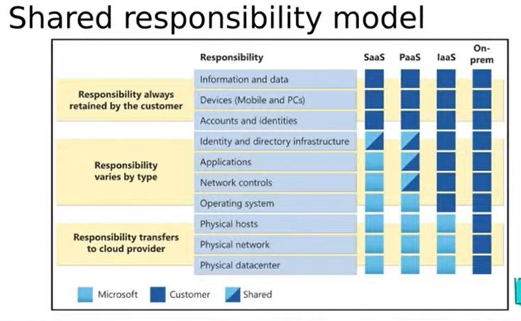
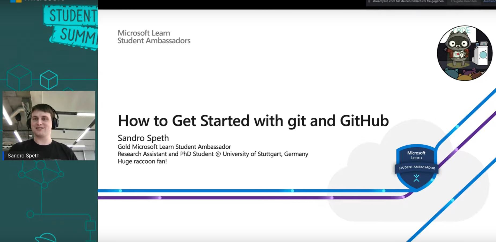
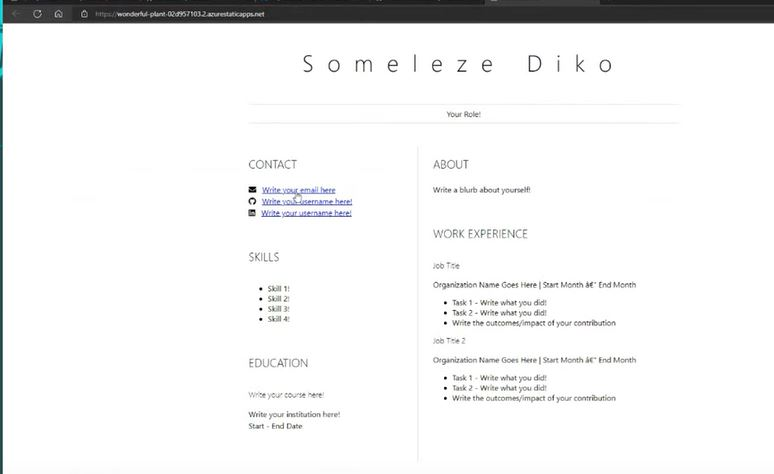
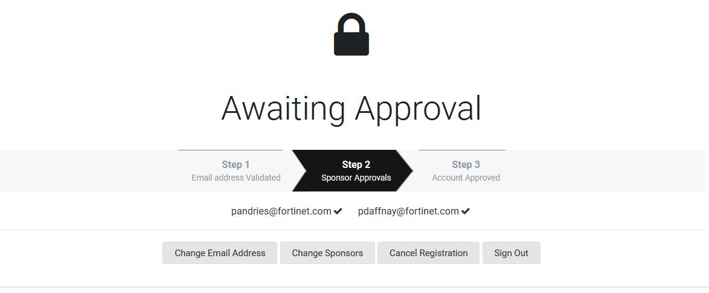

Blog Ruben Aspeslag
Posts
syberchellange
10 en 11 Maart 2022 vond de sybersecurety challange Belguim kwalificatie ronde plaats. De bedoeling van dit event was om zoveel mogelijk uitdagende opdrachten die met sybersecurety te maken hebben uit te voeren. Iedereen moest zich al op voorhand inschrijven in groepen van maximaal 4 leden, wij hebben de naam SweatLords gekozen. Onze groep bestond uit 4 leeden, Maarten, sam en mezelf (Ruben).
Deze kwalificatie ronde was volledig online verlopen, maar aangezien onze school Howest hier ruimte voor voorzien heeft in het schoolgebouw, hebben wij er als groep voor gekozen om daar aanwezig te zijn. Op deze manier hadden we toch het gevoel dat wij samen aan een event mee deden.
De spelregels waren zeer simpel, bij het begin van deze ronde waren alle opdrachten 500 punten waart, maar telkens dat er iemand een opdracht volbracht zakte deze waarde, maar een opdracht kon niet zakken tot onder de 50 punten, ook als iedereen die heeft kunnen volbrengen. Indien jij die opdracht dan al eerder volbracht had daalde je score ook mee. Op deze manier maakte het niet uit of je een opdracht als 1e volbracht of als laatste. Als je al een paar opdrachten volbracht had , zag je je score zeer snel naar beneden gaan wanneer er ook andere mensen die opdrachten volbrengen. De opdrachten waren ook gelabeld naar moeilijkheidsgraat, moeilijke opdrachten waren over het algemeen meer punten waard omdat er minder groepen waren die die konden volbrengen.
Aangezien dat wij ons met 3 studenten hebben ingeschreven die “Software ingeneer” studeren, en die ons nog niet genoeg in security hebben verdiep, wisten wij ook al op voorhand dat wij eigenlijk niet zo veel kans maakten om te winnen. Toch leek dit ons een mooi event om eens mee te nemen. Wij hebben dan toch nog een 5 tal opdrachten kunnen volbrengen. Uiteindelijk zijn wij als 80ste plaats geëindigd met 828 punten. Dit was niet slecht aangezien er 253 groepen waren ingeschreven. Deelnemen is ook belangrijker dan winnen.
Micresoft summit

Microsoft heeft op vrijdag 7 oktober een online studentesessie gehouden. Dit werd gestreamd via youtube , waar de opname nog steeds beschikbaar staat. Alle afbeeldingen in deze blogpost zijn screenshots uit deze livestream.
Eerst hebben de Microsoft medewerkers die dit online event gehost hebben, hun eigen carrières en hun ervaring met computers en programmeren besproken. Vervolgens hebben ze de technologieën die ze vaak gebruiken kort vermeld.
Vervolgens kwam er een uitleg over Cloud advocates en disign thinking. Daarna was er een pauze van 5 minuten

Hierna volgde een uitleg over de cloud en de pro’s en de cons hiervan. hierbij hebben ze het shared responsability model ook besproken. Voor mij was dit wat minder interessant, omdat ik alles dat hierover gezegd geweest is, al geleerd had in mijn 1e en 2e jaar toegepaste informatica bij Howest.

Daarna kwam er een uitleg en een demonstratie van github, dit is een zeer nuttige tool voor programmeurs die vaak gebruikt wordt, waardoor dat zeer interessant is voor beginners. Aangezien ik dit ook allemaal gezien had was dit voor mij niet nieuw. Ze hebben het ook enkel bij de basis van git gehouden, waarschijnlijk door tijdsgebrek.

Vervolgens hebben ze gedemonstreerd hoe je met een html (Hypertext Markup Language) template, een cv website host met github en azure (een micresoft service). Dit was een zeer beknopte uitleg, die een beetje technisch was. uiteindelijk was dit het resultaat.

fortinet securety fabric challange

Het bedrijf Fortinet (geen fortnite) heeft een securety challange gehosed op Dinsdagavond 11 oktober. Inschrijven was mogelijk op https://pages.info.exclusive-networks.com/BE-Fortinet-Security-Fabric-Challenge. Het event ging door in het Exclusive Networks BeLux gebouw in de Stocletlaan in Duffel. het ging vooral over netwerkbeveiliging, virtuele domainen en andere netwerk configuraties, in Fortinet Security Fabric (een securety tool “ontworpen om het uitgebreide digitale aanvalsoppervlak te overspannen om brede, geïntegreerde en geautomatiseerde beveiliging van apparaten, gegevens en applicaties mogelijk te maken”.
Eerst moest iedereen een account aanmaken op hun systeem, wat vanwege een paar technische probleemen niet echt vlot verliep. Vervolgens kwam er een uitleg over Fortinet Security Fabric, : ztna en CTNA.
Hierna moesten er groepen gevormd worden. Je het was niet te bedoeling om jein te schrijven in groepen, maar je we moesten daar ter plekke teams van 2 maken. Aangezien ik daar nog niemand kende heb ik aangesloten bij mijn buur, een oudere meneer die al een aantal jaar werkt in de cyber security.
Vervolgens was er een pizza pauze, en was er tijd om te praten met de andere deelnemers.